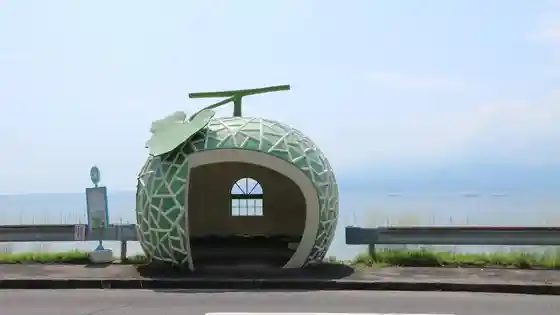
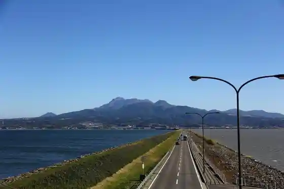
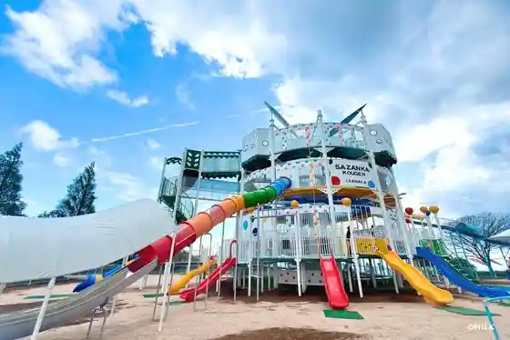
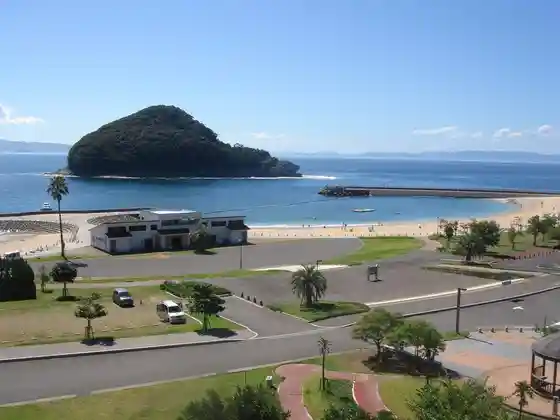

Shiraki Mine Highlands
Isahaya, Nagasaki · 0957-23-9003 · Official / source link
Furutsubasu Tei
Isahaya, Nagasaki · 0957-34-2111 · Official / source link

Isahaya Wan Kantaku Teibo Doro (Unzen Tara Shii Line)
Isahaya, Nagasaki · 0957-27-7045 · Official / source link

Sazanka Kogen Pikunikku Park Habu Sono
Isahaya, Nagasaki · 0957-34-4333 · Official / source link

Ketsu no Hama Marin Park
Isahaya, Nagasaki · 0957-48-2213 · Official / source link

Todoroki Kyo
Isahaya, Nagasaki · 0957-22-1500 · Official / source link
Megane Hashi (Isahaya Park Nai)
Isahaya, Nagasaki · 0957-22-1500 · Official / source link
Kanriku Chi Furawazon
Isahaya, Nagasaki · 0957-22-8325 · Official / source link
Ikoi no Village Nagasaki
Isahaya, Nagasaki · 0957-32-2902 · Official / source link
Isahaya Park
Isahaya, Nagasaki · 0957-22-1500 · Official / source link
to Hi Hasu Sono
Isahaya, Nagasaki · 0957-22-1500 · Official / source link
Tenyu Tera Isahaya Ie Hakasho
Isahaya, Nagasaki · 0957-22-0132 · Official / source link
Shiraki Mine Highlands Isahaya Kodomo no Shiro
Isahaya, Nagasaki · 0957-24-8017 · Official / source link
Gatsu no Oka Park
Isahaya, Nagasaki · 0957-48-1111 · Official / source link
Isahaya Shrine
Isahaya, Nagasaki · 0957-22-2073 · Official / source link
Isahaya Yuyu Land Kantaku Village
Isahaya, Nagasaki · 0957-24-6776 · Official / source link
Ueyama Park
Isahaya, Nagasaki · 0957-22-8325 · Official / source link
Tomikawa Gorge (Tomikawa Mannen Forest)
Isahaya, Nagasaki · 0957-22-1500 · Official / source link
Shiraki Mine Kogen Kosumosu Hana Uchu Kan
Isahaya, Nagasaki · 0957-23-9003 · Official / source link
Konagai no Ogatama no Ki
Isahaya, Nagasaki · 0957-34-2111 · Official / source link
Isahaya Wan Chuo Kantaku Jinai Bu Teibo
Isahaya, Nagasaki · 0957-22-0031 · Official / source link
Iimori Gatsu no Oka Onsen
Isahaya, Nagasaki · 0957-28-4141 · Official / source link
Isahaya Bijutsu Rekishikan
Isahaya, Nagasaki · 0957-24-6611 · Official / source link
Kanaizumi Terayama Koya
Isahaya, Nagasaki · 0957-22-8325 · Official / source link
Ansho Tera
Isahaya, Nagasaki · 0957-22-0138 · Official / source link
Ari Ki UKI Beach
Isahaya, Nagasaki · 0957-22-1500 · Official / source link
Tara Gaku Osamu Tara Forest
Isahaya, Nagasaki · 0957-32-2111 · Official / source link
to Hi Coast
Isahaya, Nagasaki · 0957-36-1111 · Official / source link
Onna Fuboku no Dai Sugi
Isahaya, Nagasaki · 0957-22-8325 · Official / source link
Isahaya Wan Kantaku Hakkei
Isahaya, Nagasaki · 0957-22-8325 · Official / source link
no Zomi Park Hall
Isahaya, Nagasaki · 0957-22-1500 · Official / source link
Isahaya Moriyama Local History Museum Ko Minka
Isahaya, Nagasaki · 0957-36-1111 · Official / source link